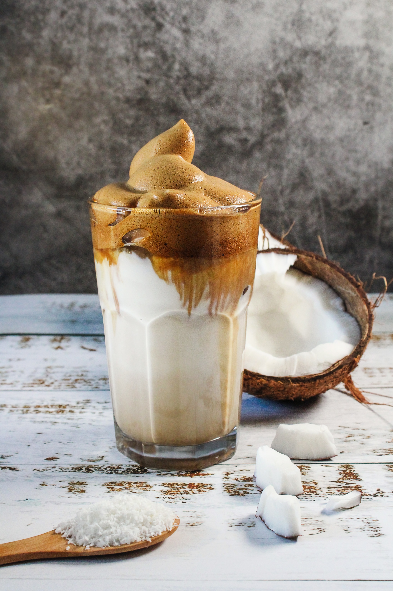
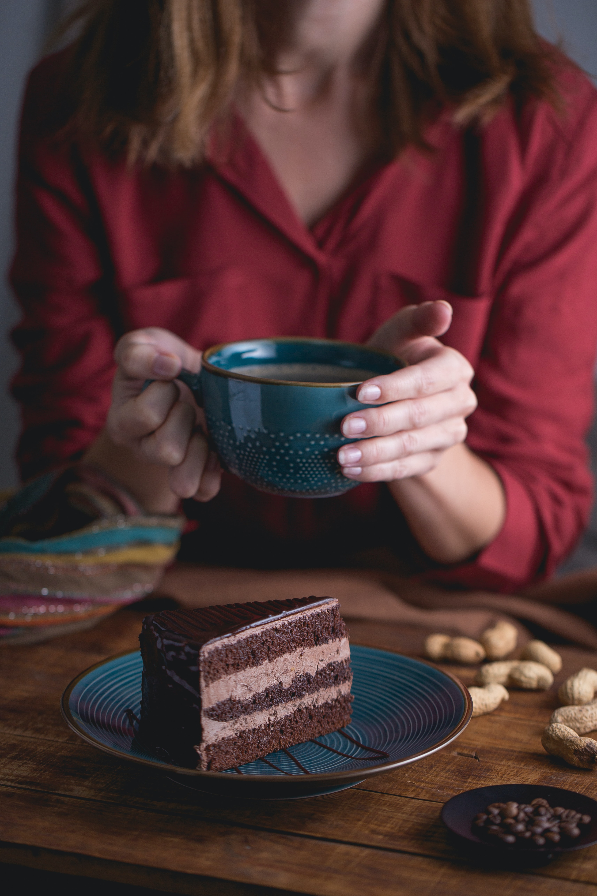
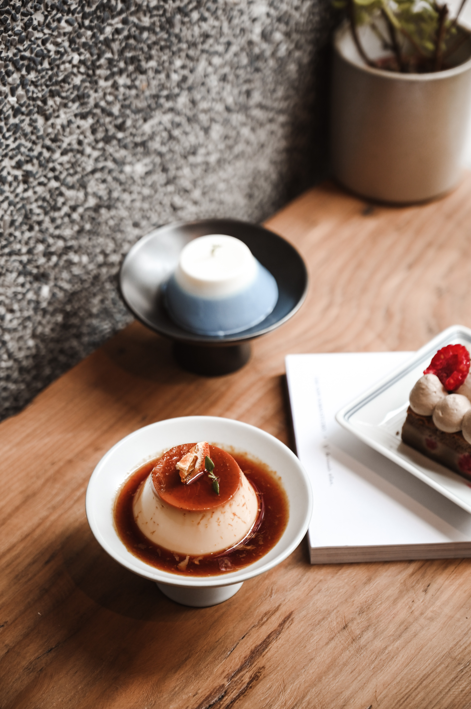

Nustros cursos y talleres
- Tecnicas de extraccion
- Curso de Tueste Nivel 1
- Análisis Sensorial
- Curso Brew-Infusiones
- Laboratorio de Cafe
- Curso práctico de preparación
Seis deliciosas recetas :
- Recetas tradicionales
- Para verdadero Apasionado
- Motivos para enamorarte
- practicas
Café helado con coco
Café helado con coco
Ingredientes:
- Café intenso (al gusto
- 1 cucharada de azúcar moreno (10 g)
- 1 cucharada de helado de coco (10 g)
- ¼ cucharadita de canela (1,2 g)
- ½ cucharadita de coco rallado (2,5 g)
 12
12
Preparación
Para empezar a elaborar esta sencilla receta prepararemos un café solo que tenga un sabor intenso.Después, le añadimos una cucharada de azúcar moreno y una cucharada de helado de coco.
A continuación, añadimos la canela y lo mezclamos bien.Al final, basta con espolvorear por encima las ralladuras de coco para tener lista esta deliciosa bebida.
El Cappuccino Moka
El Cappuccino Moka
Ingredientes:
- 100 ml. de leche.
- Café Espresso
- Chocolate negro o con leche.
- Azúcar (al gusto).
- Cacao en polvo.
12
Preparación
Vierte el café de su máquina espresso y calienta la leche sin dejar que llegue a hervir. Empieza con un poco de aire para calentar la leche y cuando vayas aumentando el vapor, la leche se espumará.
Funde el cacao hasta conseguir una bebida líquida y una vez agregada la leche caliente coloca el cacao fundido. Cubre la mezcla con la espuma de leche y espolvorea el cacao en polvo. Suele servirse en una taza (capacidad alrededor de 170 ml.).
Torta de café
Torta de café
Ingredientes:
- 300 Gramos harina
- 300 Gramos Azúcar
- 3 Cucharaditas Polvo Para Hornear
- 50 Gramos Polvo Chocolatado Nesquik
- 1/2 Cucharadita Sal
- 30 Centimetros cúbicos Vinagre De Alcohol
- 5 Cucharaditas Café
- 225 Centimetros cúbicos Agua Tibia
- 50 Centimetros cúbicos Aceite De Maíz
12
Preparación
Enmantecar y enharinar un molde de 22 cm de diámetro,cernir en el molde la harina, el polvo para hornear, el azúcar, la sal y el Polvo Chocolatado.
Hacer 2 huecos en la mezcla, en uno de ellos colocar el aceite y en el otro el vinagre,disolver el Café en el agua tibia y agregar a la preparación revolviendo con cuchara de madera, mezclando todo muy bien, cocinar en horno moderado durante 40 minutos.
Flan de café
Flan de café
Ingredientes:
- 120 gramos de miel
- 900 mililitros de leche
- 9 huevos
- 180 gramos de azúcar
- 20 gramos de café soluble
12
Preparación
Vierte miel en las flaneras,cubre la base de las flaneras con una cucharada de miel,Hierve la leche con el café,coloca la leche en un cazo al fuego y cuando esté caliente, agrega el café soluble y deja hervir,hierve la leche con el café,bate los huevos.
Mientras, casca los huevos en un bol, agrega el azúcar y bate bien con varillas eléctricas,agrega la leche,ve añadiendo la leche caliente poco a poco sobre los huevos y el azúcar, Agrega la leche,cuece los flanes,ierte la mezcla en las flaneras y cuece los flanes al baño María en horno durante 55 minutos
Café especiado indio

Café especiado indio
Ingredientes:
- cucharadita de té chai (2,5 g)
- ½ taza de leche caliente (100 ml)
- ½ cucharadita de cacao en polvo (2,5 g)
- Café indio (al gusto)
12
Preparación
Para preparar este café indio, comenzamos calentando la leche y añadiendo el chai cuando esta esté casi hirviendo. Después, dejamos que el té se infusione durante unos 3 o 4 minutos. Mientras tanto, preparamos un café indio doble. Cuando esté listo, colamos la leche para retirar los restos de té y la vertemos sobre el café. Por último, lo mezclamos bien y espolvoreamos el cacao por encima.
Atole de café y canela

Atole de café y canela.
Ingredientes :
- 4 Tazas de Agua
- 1/2 Piezas de Canela en raja
- 3/4 Taza de Piloncillo rallado
- 1/2 Cucharadas de Café
- Lata de Leche Evaporada(1 1/2 tazas)
- 5 Cucharadas de Fécula de maíz disueltas en ½ taza de agua Calienta
12
Preparación
Calienta el agua con la canela y el piloncillo, mueve constantemente hasta que el piloncillo se disuelva.
Disuelve,agrega el Café con 1 ½ tazas de Leche Evaporada y la fécula de maíz previamente disuelta. Calienta hasta que espese ligeramente, moviendo constantemente para evitar que se pegue.
Sirve.